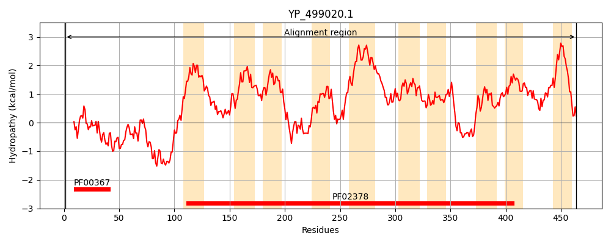
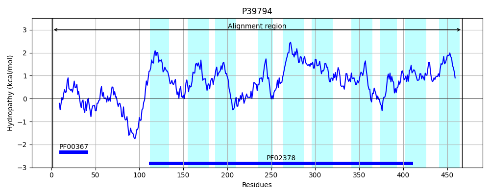
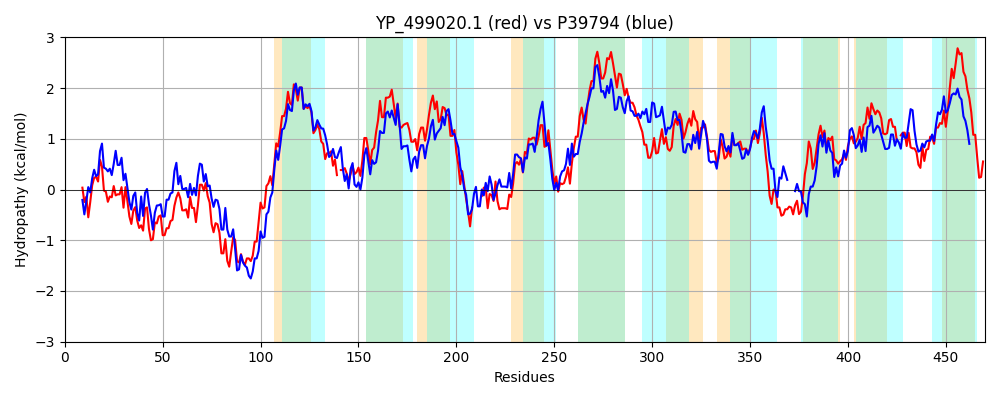

Hit Accession: P39794
Hit TCID: 4.A.1.2.8
Hit Description: gnl|BL_ORD_ID|10303 gnl|TC-DB|P39794|4.A.1.2.8 Probable PTS system, trehalose-specific IIBC component (EIIBC-Tre) (Trehalose-permease IIBC component) (Phosphotransferase enzyme II, BC component) (EC 2.7.1.69) (EII-Tre) - Bacillus subtilis.
Mach Len: 470
e:0.000000
Query TMS Count : 10
Hit TMS Count: 10
TMS-Overlap Score: 7.500000
Predicted Substrates:CHEBI:10202;alpha,alpha-trehalose
BLAST Alignment:
Score: 1274 , Bit scores: 495 bits, E-value: 1.8e-173, Alignment length: 470, Percentage identity: 53
Query: 1 MAVKREDVKAIVTAIGGKENLEAATHCVTRLRLVLKDESKVDKDALSNNALVKGQFKADHQYQIVIGPGTVDEVYKQFIDETGAQEASKDEAKQAAAQKGNPVQRLIKLLGDIFIPILPAIVTAGLLMGINNLLTMKGLF-GPKALIEMYPQIADISNIINVIASTAFIFLPALIGWSSMRVFGGSPILGIVLGLILMHPQLVSQYDLA----KGNIPTWNLFGLEIKQLNYQGQVLPVLIAAYVLAKIEKGLNKVVHDSIKMLVVGPVALLVTGFLAFIIIGPVALLIGTGITSGVTFIFQHAGWLGGAIYGLLYAPLVITGLHHMFLAVDFQLMGSSLGGTYLWPIVAISNICQGSAAFGAWFVYKRRKMVKEEGLALTSCISGMLGVTEPAMFGVNLPLKYPFIAAISTSCVLGAIVGMNNVL-GKVGVGGVPAFISIQKEFWPVYLIVTAIAIVVPCILTIVMSHF 464
M + + IV A+GG EN+ AATHCVTRLR L DESKVD++ L +VKG F + Q+Q+VIG GTV++VY + + ETG E++KDE K+A+ + NP+QR +K L DIFIPILPAIVTAGLLMGINN+LT +G+F K+++++YPQ AD++N+IN+IA TAF FLPALIGWS+++ FGG+P+LGIVLG++L+HP L++ + G IP WNLFGLE++++ YQGQVLP+L+A+Y+LAKIE L K + I++LVV P+ LL+TGF +FIIIGP+ IG +TSG+ +F LGG +YG Y+ LVITG+HH FLAVD QL+GS LGGT+LWP++A+SNI QGSAA F+ K K++GL+LTS IS LG+TEPA+FGVNL ++PFI A+ +S + G + VL VGVGGVP SI ++W + I AI ++VP T + F
Sbjct: 1 MGELNKSARQIVEAVGGAENIAAATHCVTRLRFALIDESKVDQEMLDQIDVVKGSFSTNGQFQVVIGQGTVNKVYAELVKETGIGESTKDEVKKASEKNMNPLQRAVKTLADIFIPILPAIVTAGLLMGINNILTAEGIFFSTKSIVQVYPQWADLANMINLIAGTAFTFLPALIGWSAVKRFGGNPLLGIVLGVMLVHPDLLNAWGYGAAEQSGEIPVWNLFGLEVQKVGYQGQVLPILLASYMLAKIEVFLTKRTPEGIQLLVVAPITLLLTGFASFIIIGPITFAIGNVLTSGLISVFGSFAALGGLLYGGFYSALVITGMHHTFLAVDLQLIGSKLGGTFLWPMLALSNIAQGSAALAMMFIVKDE---KQKGLSLTSGISAYLGITEPAIFGVNLRYRFPFIIAMVSSGLAGMYISSQGVLASSVGVGGVPGIFSIMSQYWGAFAIGMAIVLIVPFAGTYAYARF 467 | Protein Hydropathy Plots: |
|---|
|  |  |
Pairwise Alignment-Hydropathy Plot:
|
|---|
|  |